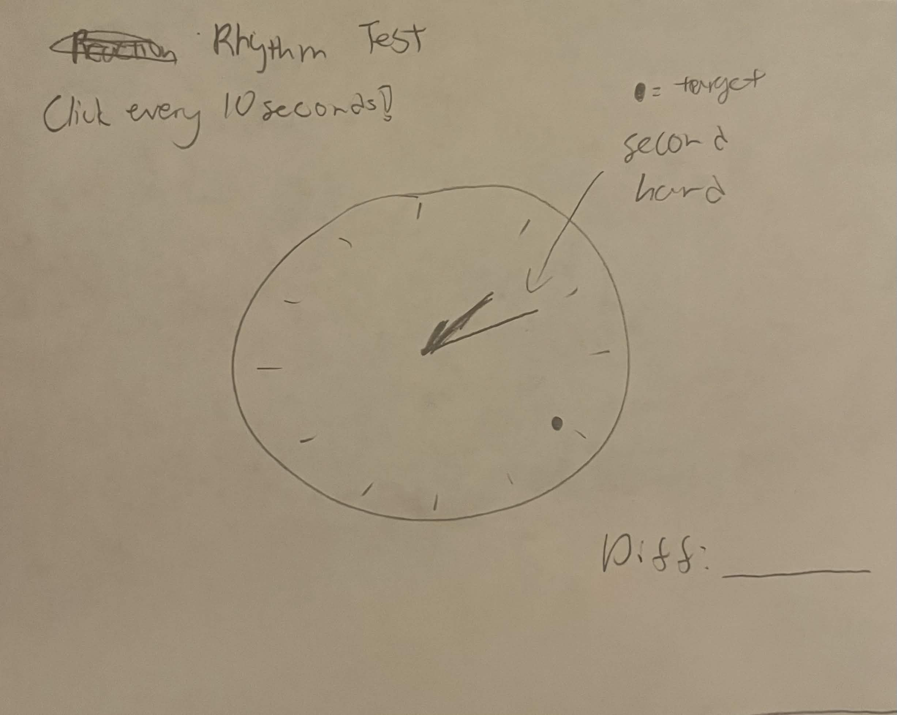
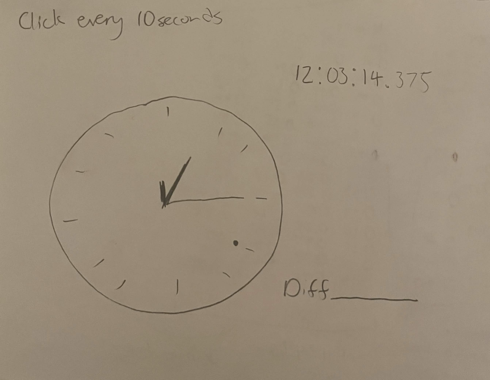
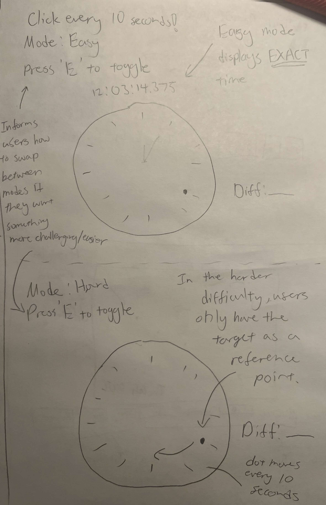

Sketch narrative
This countdown timer visualizes the passage of time using moving particles, where the speed of the particles indicates how much time remains. I chose this sketch because I think it’s a fun way to visualize time flow as a timer rather than a static numeric display.
- Context: Designed for users engaging in focused or time-sensitive activities, like studying, meditation, or breathing exercises, where subtle, non-distracting visual feedback helps track the passage of time. Users can set a timer in minutes and seconds.
- Design decisions: Particle speed slows as time runs out, making the urgency of time passing intuitive without needing to read the clock. The variation in color adds visual interest while preventing the animation from feeling repetitive, especially during longer timers.
- Future work: Add presets like 5 min, 10 min, 15 min, 25 min Pomodoro, etc.
Sketch evolution


Sketch narrative
This clock visualizes the current time using non-interactive, vertical radio-button lists for hours, minutes, and seconds. It's intended as an example of an unconventional clock that communicate time in unusual formats. I chose this sketch because it explores how interface elements typically used for interaction can be repurposed purely for visual communication.
- Context: This would be for users on a website exploring creative (or poorly designed) clocks. This clock emphasizes on visual experimentation rather than fast readability.
- Design decisions: Hours, minutes, and seconds are arranged in three vertical lists with multiple columns to fit within the canvas while keeping all values evenly spaced and visible. Each unit uses a distinct color for the selected value to make the current selection easier to find.
- Future work: Adding an animation to the selected value so the selected time pulses subtly, making it easier to identify changes. Maybe even add a smoother transition effect between time changes.
Sketch evolution
Replace these images with your own sketch evolution images.


Sketch narrative
This is clock that doubles as a reaction/tempo game. Users can practice timing and rhythmic accuracy by clicking in sync with a 10-second repeating target, while hard mode makes it intentionally difficult to read (no hands on the clock face). I chose this sketch because it shows how a familiar object like a clock can be gamified into something interactive instead of something you just look at.
- Context: This would be for users that are looking to improve timing or rhythmic consistency. It can be used on a desktop or tablet during music practice sessions or just for a casual interactive timing challenge.
- Design decisions: The familiar clock face is used to provide a recognizable reference point for users, and the lack of hands on the clock face challenges the users to use their internal sense of time and rhythm. The red dot moves every 10 seconds as the target also serves as another reference point and contrasts against a muted background for visibility, and clicking anywhere calculates the reaction difference in milliseconds.
- Future work: Track multiple clicks to compute average reaction time and display a history of recent clicks.
Sketch evolution


